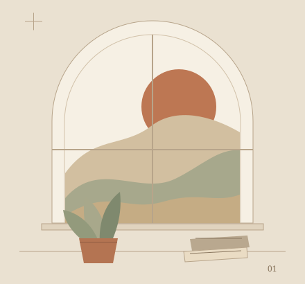

从一个小问题开始，
把过程与结果一起留下来。
这里可以介绍项目的出发点、你负责的部分，以及最后做出了什么。现在先留白，等一件真实作品住进来。
看一段演示
这里，放下一段演示。
视频位置 · 尚未添加
演示区域示意。这里没有自动播放，也没有虚构的视频内容。
让代码说话
一小段代码，也可以成为故事的一部分。以下仅为格式示例。
hello.py · 示例代码
# Every project begins somewhere.
print("Hello, a new idea.")将来可以在这里链接对应的 GitHub 项目仓库。
图像与细节
